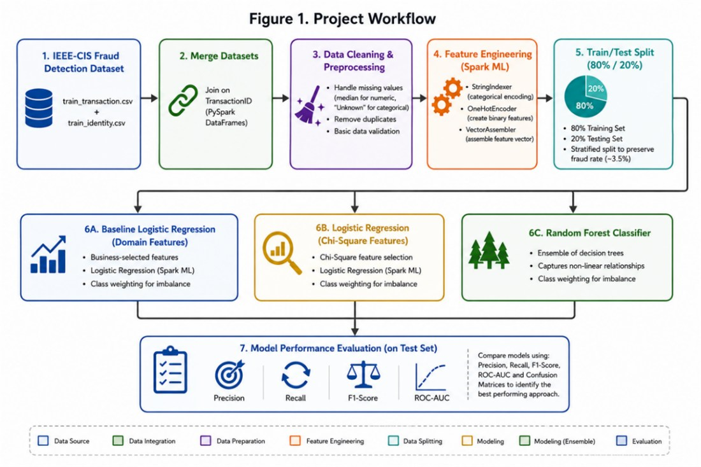
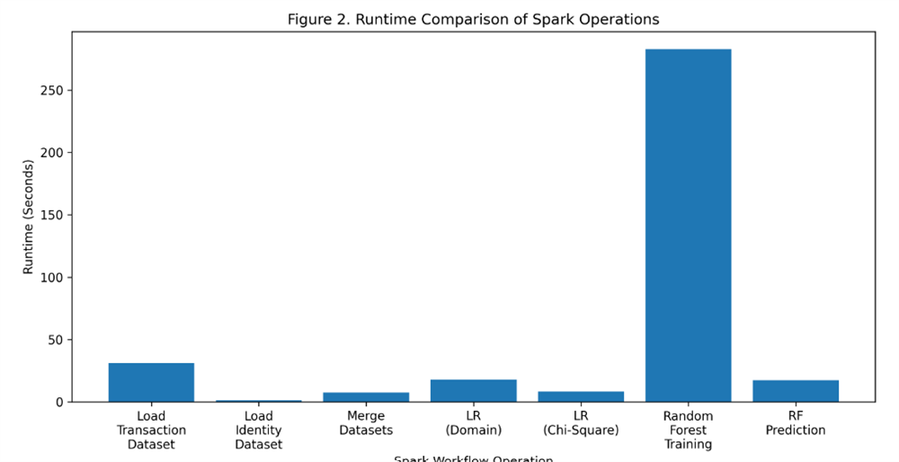
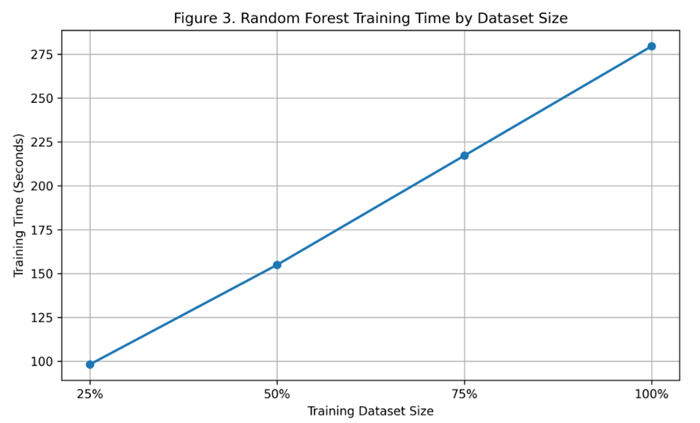

Graduate Project · Apache Spark on AWS
Fraud Detection in Financial Transactions Using Apache Spark
Analyzed and prepared 590,540 transactions using Apache Spark and Python and compared predictive models, with the strongest model achieving a 0.866 ROC-AUC.
- 590,540 transactions
- 3.5% fraud rate
- 0.866 ROC-AUC
Tools used:
Context & analytical question
Financial institutions process millions of transactions daily, and fraud is difficult to catch with traditional, single-machine processing methods at that scale. This academic evaluation project asks: how can Apache Spark improve the speed, scalability, and effectiveness of fraud detection in large-scale financial transaction data?
This was an independent academic project built around a public benchmark dataset, not a client engagement. No employer, healthcare, or proprietary data was used; the dataset is anonymized transaction data released publicly for research.
Data
The project uses the IEEE-CIS Fraud Detection dataset, a public Kaggle competition dataset built from anonymized transaction data originally provided by Vesta Corporation.
| Metric | Value |
|---|---|
| Transaction records | 590,540 |
| Combined features (transaction + identity) | 434 |
| Confirmed fraud cases | 20,663 |
| Fraud rate | 3.5% |
The dataset is highly imbalanced: fraudulent transactions make up only 3.5% of records, which shaped every downstream modeling decision, from stratified splitting to class weighting.
Approach
{kind=link}

Transaction and identity tables were loaded into PySpark DataFrames and joined on transaction ID, cleaned (median imputation for numeric fields, "unknown" for categorical fields), and encoded with StringIndexer, OneHotEncoder, and VectorAssembler before an 80/20 stratified train/test split that preserved the ~3.5% fraud rate in both sets.
Three models were trained and compared, each with class weighting to address the imbalance:
- Logistic Regression: baseline using domain-selected features
- Logistic Regression: Chi-square statistical feature selection
- Random Forest: ensemble of decision trees capturing nonlinear relationships
Visual analysis
Charts below are generated directly from the project's own Spark analysis.

Fraudulent transactions represent only 3.5% of the 590,540 total, confirming a highly imbalanced classification problem that required stratified sampling and class weighting rather than a naive train/test split.
{kind=link}

Data loading, merging, and both logistic regression models each completed in well under a minute. Random Forest training was the clear runtime bottleneck at roughly 280 seconds, while prediction stayed fast across all models.
{kind=link}

Training time scaled roughly linearly with dataset size, from about 100 seconds at 25% of the training data to about 280 seconds at the full training set, indicating Spark handled growing data volume predictably rather than degrading disproportionately.
Results
| Model | Precision | Recall | F1-Score | ROC-AUC |
|---|---|---|---|---|
| Logistic Regression (domain features) | 0.081 | 0.628 | 0.144 | 0.744 |
| Logistic Regression (Chi-square features) | 0.070 | 0.588 | 0.125 | 0.716 |
| ★ Random Forest | 0.174 | 0.653 | 0.274 | 0.866 |
Random Forest was the strongest model, reaching a 0.866 ROC-AUC, the best balance of precision and recall among the three approaches tested, on held-out test data.
These are academic model-evaluation results on a benchmark dataset, not a production system. The model was not deployed, and no claim is made about real-world fraud prevented or financial losses avoided.
Skills demonstrated
Limitations & next steps
- Precision remained low (0.174) even for the best model, meaning most flagged transactions were still false positives: a direct consequence of the 3.5% fraud rate and a limitation worth stating plainly alongside the strong ROC-AUC.
- Evaluation was performed on a single public benchmark dataset; results are not verified to generalize to other transaction populations.
- The project's write-up discusses Amazon EMR as a possible path to production-scale deployment. This was a proposed direction only; the model was not deployed, and no production system exists.